Warning: package 'pacman' was built under R version 4.3.3Trabajo final correlacional Satisfacción con la democracia
Estadística Correlacional 2025, Carrera de Sociología - Universidad de Chile
1 Introducción
Para esta investigación utilizaremos el Estudio Longitudinal Social de Chile (ELSOC) estudio único en Chile y América Latina, el cual encuesta anualmente a una muestra representativa de la población urbana en Chile a lo largo de una década, con el fin de evaluar cómo piensan, sienten y se comportan los chilenos en torno a un conjunto de temas referidos al conflicto y la cohesión social en el país. A través de los datos se buscará medir la percepción de la calidad de la democracia, que será entendida como la valoración subjetiva de las personas respecto al proceso de participación e influencia política en la ciudadanía.
Durante los últimos años, Chile ha mostrado una notable desconexión con sus fuerzas políticas, esta desconexión llegó a su cúspide con el estallido social en octubre del 2019, pero ya venía revelándose desde hace tiempo a través de una baja participación electoral. Disi y Mardones (2019) apuntan a que la desafección tiene un efecto negativo tanto en la participación política convencional y no convencional, pero sobre todo en la primera, por lo que a mayor desconexión con la política del país, menor es la participación electoral. Es por esto que nos parece relevante analizar la legitimidad que los ciudadanos dan al sistema político Chileno, ya que su funcionamiento no se sostiene solo con que haya sido escogido por una mayoría sino también por la satisfacción de la ciudadanía, Sepulveda y Garrido (2022) plantean que la satisfacción con la democracia depende también de la confianza que la ciudadanía tenga en sus instituciones y que tan representados y escuchados se sientan por estas, esto es importante ya que como Riffo (2019) señala, quienes sienten insatisfacción con la democracia desconfían más en las instituciones ligadas a esta. Según Molina y Levine (2007) la calidad de la democracia debe ser medida a partir de cinco dimensiones conceptuales, decisión electoral, participación, respeto a la voluntad popular, responsabilidades y soberanía. ELSOC considera la medición operacional de la percepción de la calidad de la democracia en Chile, esto está incluido en el módulo C de la encuesta “Ciudadanía y democracia” que utiliza varios ítems, en su mayoría de tipo ordinal, buscando medir el nivel de acuerdo con cada pregunta, para luego abordar el nivel de confianza en distintas instituciones. La escala buscará medir cómo perciben los chilenos la calidad de la democracia, a partir de preguntas que apuntan a la confianza en los tres poderes del estado. Medir la calidad de la democracia y a su vez entender cómo los ciudadanos perciben la misma, resulta relevante ya que es determinante para el desarrollo de un país (Sanchez, Ganatios, 2011), tanto por la participación política como por la representatividad.
El objetivo principal de este trabajo es analizar la relación que existe entre variables sociodemográficas (edad) y actitudinales (confianza en las poderes del Estado) con la percepción que existe de la calidad democrática en Chile, esperando que los hallazgos nos ayuden a comprender los efectos de la desconfianza en esta y como estos desafían la legitimidad del sistema político en Chile. Para cumplir con este objetivo, nuestras hipótesis son;
- H1 : A mayor edad, mayor será la satisfacción con el funcionamiento de la democracia.
- H2: Existe una relación entre la confianza en los tres poderes del estado y la satisfacción a la democracia.
- H3: A una menor edad, mayor será la confianza a los tres poderes del Estado.
2 Metodología
La presente sección muestra el diseño metodológico utilizado para analizar la satisfacción con el funcionamiento de la democracia en Chile y su relación con la edad y la confianza en tres instituciones clave del Estado: Gobierno, Poder Judicial y Congreso Nacional. El estudio emplea datos del Estado Longitudinal Social de Chile (ELSOC), ola 7 (2023), correspondiente al módulo “Ciudadanía y Democracia”. Esta encuesta de panel es representativa de la población urbana entre 18 y 75 años, lo que permite observar cambios y continuidades en percepciones ciudadanas. Para este análisis se trabajó con los casos que presentan información completa en las variables seleccionadas, garantizando consistencia en los resultados.
El estudio se centra en una variable dependiente (satisfacción con la democracia) y tres variables independientes relacionadas con la confianza institucional, además de la edad como variable continua complementaria. Todas las medidas pertenecen al módulo C del cuestionario, que evalúa percepciones subjetivas sobre el funcionamiento democratico. Los procedimientos estadísticos aplicados fueron seleccionados según el nivel de medición de cada variable, combinando métodos descriptivos, correlaciones y pruebas de asociación, con el fin de asegurar rigor analítico y coherencia en el contraste de las hipótesis planteadas.
2.1 Variables
La única variable dependiente es “satisfacción con la democracia” que pertenece al código c01 y fue renombrada como “saf_demo”. Corresponde a la pregunta “¿Cuán satisfecho o insatisfecho está usted con el funcionamiento de la democracia en Chile?, medida originalmente en una escala ordinal de 1= nada satisfecho a 5= muy satisfecho. Debido a la presencia de categorías con baja frecuencia en los valores superiores de la escala, se procedió a recodificar en tres niveles conceptualmente coherentes: Baja (1 - 2), Media (3), Alta (4 - 5). Esta recodificación permite obtener distribuciones más equilibradas y asegurar el cumplimiento de los supuestos métodos estadísticos empleados.
Por otro lado, las tres variables independientes pertenecen al ítem C05, y son “confianza en el Estado” que corresponde al código c05_01 y fue renombrada como “conf_gob”, la segunda es “confianza en el poder judicial” que corresponde al código c05_05 y fue renombrada como “conf_jud”, y por último la variable “confianza en el congreso nacional” perteneciente al código c05_07 fue renombrada como “conf_cong”. En un principio estas utilizaban una escala donde 1 significa “Nada” y 5 significa “Mucho”, sin embargo al igual que con la variable dependiente la escala fue recodificada a tres niveles conceptuales, baja, media y alta confianza, con el fin de evitar celdas vacías y obtener distribuciones más estables para el análisis.
Estas tres variables provienen del ítem C05: “Utilizando una escala donde 1 representa “Nada” y 5 “Mucho”, ¿Podría decirme cuánto confía usted en cada una de las siguientes instituciones?” Las escalas originales fueron recodificadas a los tres niveles conceptuales.
La variable continua que registra la edad (edad_enc) declarada por los participantes en años cumplidos, presenta una distribución no normal y se relaciona con variables ordinales, su análisis se efectuó mediante estadísticos no paramétricos.
Con el fin de asegurar la limpieza y una cohesión analitica de la base de datos, se aplicó un proceso previo al tratamiento donde los valores que son atípicos o de codificación especial (-888, -999, -777, -666) pasaron por la recodificación como valores perdidos (NA), posterior a esto se aplicó el método listwise, ya que el volumen original de 2726 observaciones, posibilita el asumir que el porcentaje de casos perdidos es considerablemente bajo, garantizando así que el proceso de eliminación de los casos incompletos no afectará de una manera significativa a la representatividad de la muestra. La principal ventaja de utilizar este método es tener la posibilidad de obtener y utilizar una base de datos que cuente con casos completos, lo que garantiza que cada correlación estadísticas se utiliza el mismo conjunto de datos, lo que permite mantener una buena coherencia y un profundo nivel de comparación entre los análisis que se realicen.
2.2 Metodos
La elección de los métodos estadísticos se basa en el nivel de medición de las variables, la distribución observada y los objetivos de contraste de hipótesis. El análisis se divide en métodos descriptivos, pruebas de hipótesis y estimación de tamaños de efecto.
En el caso de la primera hipótesis: A mayor edad, mayor será la satisfacción con el funcionamiento de la democracia. Se optó por emplear el coeficiente de correlación Spearman, dado que ambas variables se comportan como ordinales y no presentan distribución normal. Este método no paramétrico permite evaluar asociaciones monotónicas y manejar empates en las categorías, por lo que resulta la opción más pertinente para este tipo de datos.
Para la segunda hipótesis, que analiza la correlación entre la confianza de los tres poderes del Estado y la satisfacción con la democracia, fue necesario recodificar las variables de confianza en categorías (baja, media y alta), lo que permitió construir tablas de contingencia y aplicar la prueba de Chi - cuadrado de independencia, complementada con el coeficiente V de Cramer para estimar la magnitud del efecto y determinar la fuerza real de la asociación.
Finalmente para la tercera hipótesis, que evalúa la relación entre la edad y la confianza de las instituciones, nuevamente se utilizó Spearman ya que tanto la edad como los niveles de confianza corresponden a escalas ordinales. Este método permite identificar si existe una tendencia monotónica entre ambas variables sin exigir normalidad ni linealidad. De este modo cada prueba estadística fue seleccionada en coherencia con las características de las variables y con los requerimientos analíticos del estudio, asegurando consistencia metodológica en el contraste de las hipótesis planteadas.
En todas las hipótesis se reportó tamaño del efecto, siguiendo los criterios de Cohen: <0.1: muy pequeño, 0.1 - 0.3: pequeño, 0.3 - 0.5: moderado, >0.5: grande. Estos criterios permiten interpretar la relevancia substantiva de los hallazgos, más allá de su significancia estadística.
3 Análisis
3.1 Análisis Descriptivos
Para dar inicio al análisis del fenómeno que se pretende estudiar, se comenzará con un análisis univariado de las variables con respecto a estadíticos descriptivos y frecuencias.
| variable | n | minimo | maximo | media | mediana | sd | cv |
|---|---|---|---|---|---|---|---|
| Confianza Congreso | 2528 | 1 | 5 | 1.75 | 1 | 0.90 | 51.43 |
| Confianza Gobierno | 2528 | 1 | 5 | 2.11 | 2 | 1.14 | 54.03 |
| Confianza Judicial | 2528 | 1 | 5 | 2.05 | 2 | 1.02 | 49.76 |
| Edad | 2528 | 21 | 75 | 48.05 | 49 | 12.02 | 25.02 |
| Satisfacción Democracia | 2528 | 1 | 5 | 2.25 | 2 | 1.15 | 51.11 |
A partir de los datos se puede analizar que el nivel de confianza al congreso, su mediana posee un valor de 1, ubicándose así en el valor más bajo, el CV que tiene un valor de 51.43 indicando alta dispersión relativa. La confianza en el gobierno y en el poder judicial muestran valores de medias de 2.11 y un 2.05, ambos con un CV que cercano al 50%, lo que muestra que hay una fuerte variabilidad entre las respuestas. La variable de edad posee un valor de 25.02 en su CV, lo que confirma una distribución de datos que es más homogénea. La satisfacción con la democracia, es baja con una media de 2.25 y un CV de 51.11, mostrando una dispersión importante respecto de las percepciones ciudadanas.
Gráfico 1.
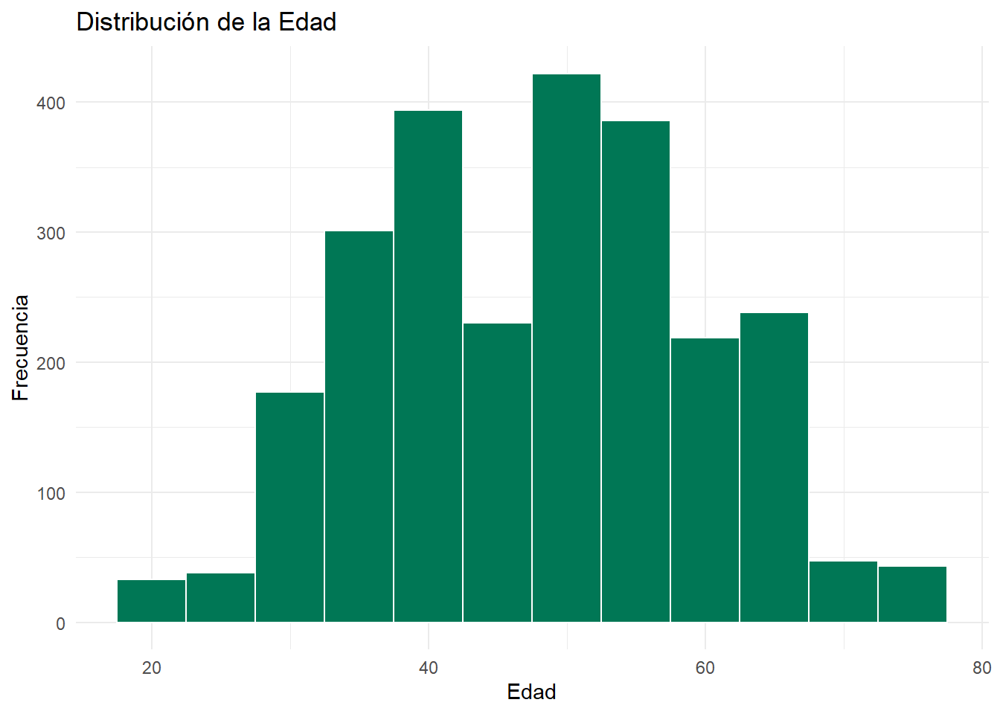
En el gráfico 1 de histograma muestra por un lado que hay una alta concentración de personas encuestadas que se encuentran en un rango entre los 40 y 60 años, lo que explica los valores de 48 de media y 49 de mediana que se reportaron en la tabla 1, y por otro lado la presencia de casos en edades más bajas respecto de la media y la mediana demuestra una dispersión de los datos que es importante, lo que explica también coherentemente el valor de 12 años en la desviación estándar. A modo de síntesis el gráfico no hace más que confirmar que si bien existe una distribución amplia de la edad pero que esta amplia distribución es también medianamente relativa, con una alta concentración en la tercera edad y sin notorias asimetrías.
Grafico 2.
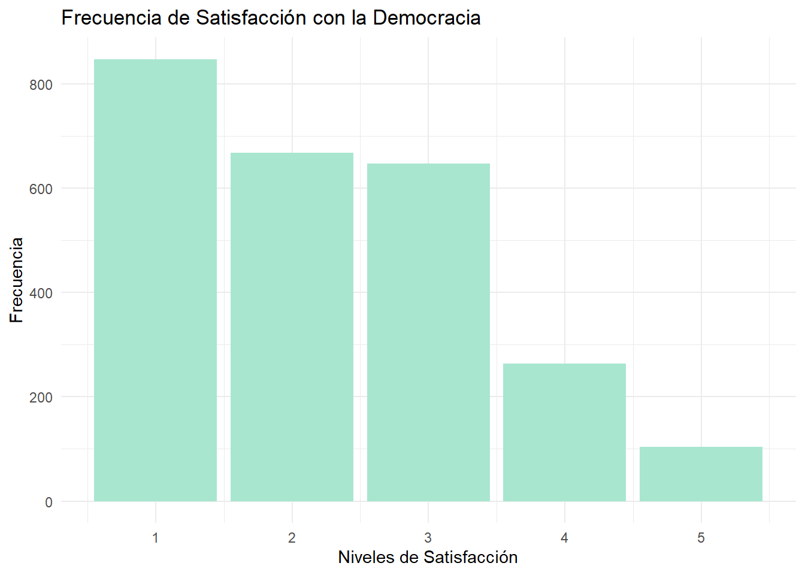
Este gráfico muestra que la mayor frecuencia de respuestas se asocian al primer nivel de satisfacción con un total de 847 respuestas, seguido de los niveles 2 (267 respuestas) y 3 (647 respuestas). Esto muestra que la mayoría de los encuestados muestran una baja o moderada valoración de la democracia. Sin embargo los niveles 4 (263) y 5 (104), mostrando frecuencias menores a los niveles anteriores. Esta distribución está en coherencia con las medias (2.25) y la mediana (2) las cuales muestran un nivel generalizado de baja satisfacción. Este gráfico muestra una inclinación general hacia la insatisfacción, a pesar de que hay una cierta variabilidad que busca revelar las diferencias entre las respuestas.
Grafico 3.
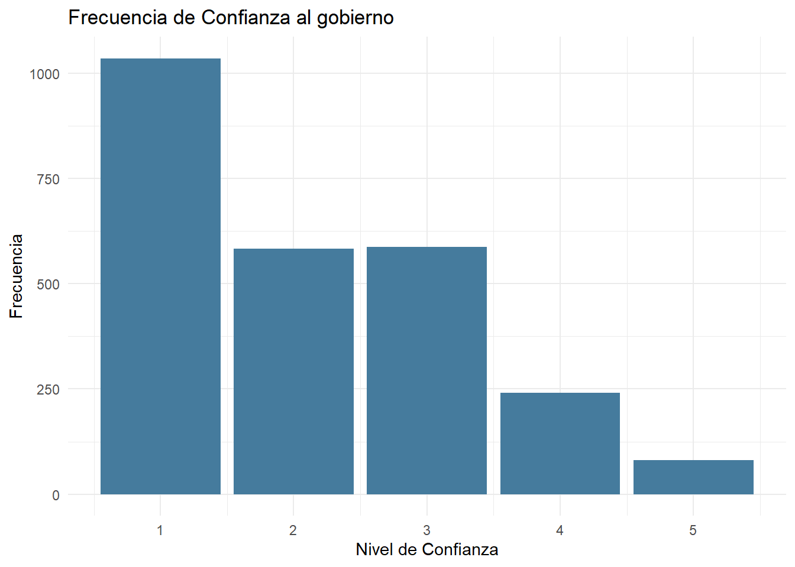
El nivel 1 “nada de confianza” tiene una frecuencia con 1036, concentrando un 41% de la muestra. Seguido por el nivel 3; confianza moderada y el nivel 2; poca confianza, evidenciando que los valores de mayor frecuencia señalan una nula-moderada confianza al gobierno. Los niveles 3, 4 y 5 en conjunto suman 909 casos. Esto explica la fuerte concentración de datos que también coincide con la media y la mediana. Su desviación estándar de 1,14 demuestra una dispersión moderada, ya que a pesar de que los valores bajos tengan mayor frecuencia, el nivel 3 hace contrapeso al concentrar una alta cantidad de datos, alterando la media. Este gráfico nos indica que hay una baja confianza de parte de la ciudadanía en el gobierno.
Grafico 4.
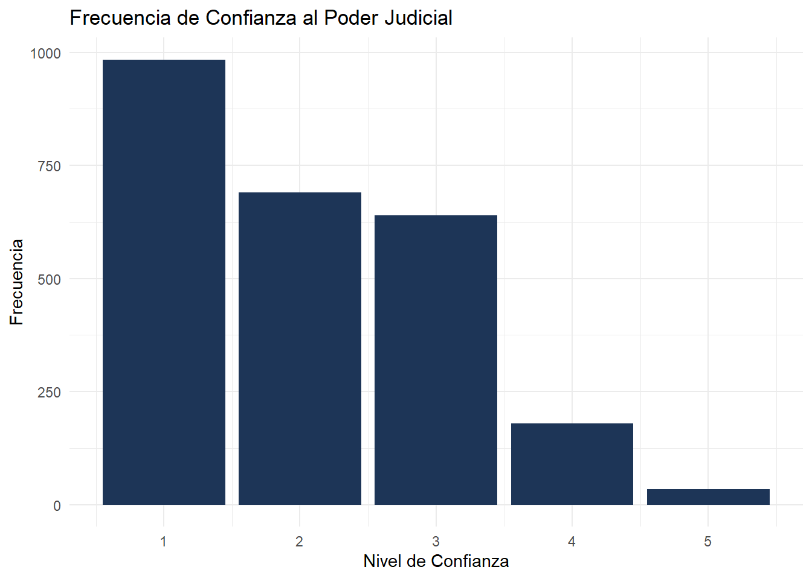
El nivel 1 “nada de confianza” con un 39% de los datos, seguido por el nivel 2 y 3 los valores que más se repiten son aquellos que indican una confianza en el poder judicial baja o nula, concentrando entre los 3 niveles más bajos un 91,5% de los datos. La frecuencia de alta confianza es significativamente menor, lo cual coincide con la media (2,05) y la mediana (2), esto indica que la tendencia central es a la desconfianza. La desviación estándar de 1,02 indica una dispersión moderada, a pesar de que la mayoría de datos se agrupen en valores bajos, hay una variación en las respuestas, sobre todo con el nivel 3. Este gráfico refleja una baja confianza de parte de la ciudadanía en el poder judicial.
Grafico 5.
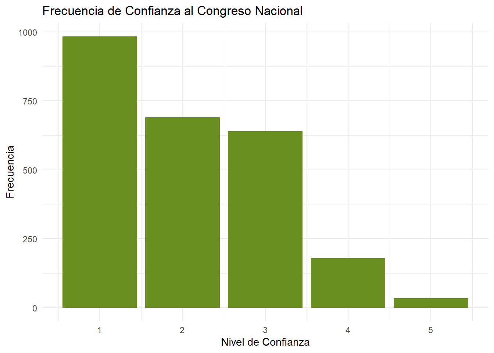
Nuevamente el nivel 1 muestra un alto porcentaje (52%) de los datos de la muestra, seguido por el nivel 2 los valores indican una baja confianza son los de mayor frecuencia. Los valores 3, 4 y 5 que señalan una confianza moderada-total tienen frecuencias bajas, las tres en conjunto suman 579 casos, lo que representa un 23% de la muestra. Esto explica la alta concentración de datos en el lado negativo de la tabla, ya que los dos niveles más bajos hay más del doble de los datos que acumulan el resto de niveles, por lo que, como señala la media (1,75) y la mediana (1) existe una evidente desconfianza en el Congreso Nacional. La desviación estándar de este análisis es la más baja de las tres instituciones analizadas, de los tres poderes del estado, el Congreso Nacional es la institución en la que menos confían las personas.
3.2 Análisis Bivariados
En esta sección se presentan los análisis bivariados realizados para contrastar las tres hipótesis de investigación. Se consideran, por una parte la tabla resumen de correlaciones y asociaciones y por otra, los gráficos bivariados construidos para facilitar la interpretación sustantiva de los resultados. En todos los casos se reportan el nivel de significancia y el tamaño del efecto, de acuerdo con los criterios de Cohen.
| Hipotesis | Variables | Test | Coeficiente | p_valor |
|---|---|---|---|---|
| H1 | Edad vs Satisfacción con la democracia | Spearman ρ | -0.04 | 0.04 |
| H2 | Satisfacción vs Confianza Gobierno | Chi-cuadrado / V de Cramer | X²=570.82, V=0.336 | 0.00000000022 |
| H2 | Satisfacción vs Confianza Poder Judicial | Chi-cuadrado / V de Cramer | X²=155.35, V=0.200 | 0.00000000022 |
| H2 | Satisfacción vs Confianza Congreso Nacional | Chi-cuadrado / V de Cramer | X²=165.54, V=0.210 | 0.00000000022 |
| H3 | Edad vs Gobierno | Spearman ρ | -0.034 | 0.0812 |
| H3 | Edad vs Poder Judicial | Spearman ρ | 0.025 | 0.2152 |
| H3 | Edad vs Congreso Nacional | Spearman ρ | 0.072 | 0.0003 |
3.2.1 Análisis entre la correlación de las variables Satifacción a la democracia (saf_demo) y Edad
| Estadístico | Valor |
|---|---|
| Rho - coeficiente | -0.04 |
| p-valor | 0.04 |
La tabla muestra una correlación de Spearman muestra un coeficiente ρ = -0.04 con p = 0.04, lo que indica una asociación estadísticamente significativa pero extremadamente débil. Aunque el valor p indica significancia estadística, el coeficiente es tan cercano a cero que la relación carece de relevancia práctica. Esto implica que la edad no explica de manera sustantiva las diferencias en satisfacción democrática. En términos generales las variaciones entre personas jóvenes y mayores son mínimas y no conforman un patrón consistente, lo que se confirma posteriormente en los gráficos por grupos etarios.
Gráfico H1.
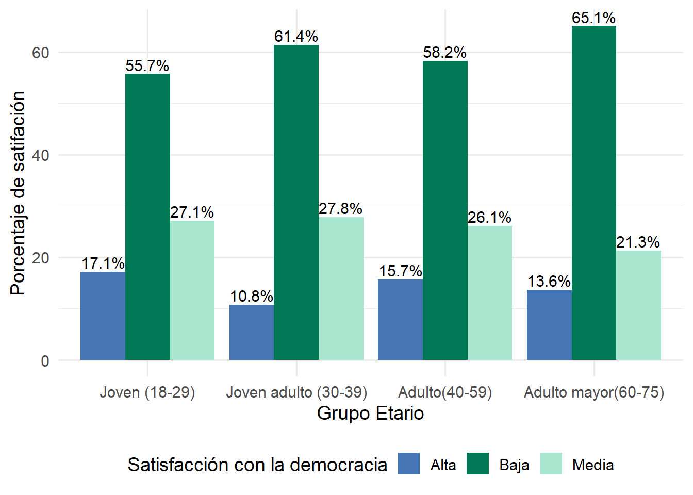
El gráfico 1 evidencia que la satisfacción baja predomina en todos los grupos etarios, desde jóvenes hasta adultos mayores. Aunque existe una ligera tendencia a mayor insatisfacción en los grupos de mayor edad, las diferencias entre tramos son mínimas y no configuran un patrón claro. La satisfacción media y alta se mantienen relativamente estables entre grupos, lo que coincide con el coeficiente de correlación casi nulo. Por último, el gráfico confirma que la edad no desempeña un rol relevante en la evaluación del funcionamiento democrático.
3.2.2 Análisis entre la correlación de las variables Satifacción a la democracia (saf_demo) y Confianza a los poderes del estado (conf_gob, conf_jub, conf_cong)
| Variable | X2 | df | p.valor | V.de.Cramer |
|---|---|---|---|---|
| Confianza Gobierno | 570.82 | 4 | 0.00000000000000022 | 0.336 |
| Confianza Poder Judicial | 155.35 | 4 | 0.00000000000000022 | 0.200 |
| Confianza Congreso Nacional | 165.54 | 4 | 0.00000000000000022 | 0.210 |
Los resultados muestran una asociación significativa entre la confianza en los tres poderes del Estado y la satisfacción con la democracia. Las pruebas de Chi - Cuadrado indican que está relación existe en los tres casos y los valores de V de Cramer revelan que el efecto es moderado para el Gobierno (V= 0.336) y débil pero consistente para el Poder Judicial (V= 0.200) y el congreso Nacional (V= 0.210). Esto indica que la confianza institucional influye en la satisfacción democrática, siendo el Gobierno la institución más vinculada a esta evaluación. Los resultados respaldan la existencia de un vínculo claro entre ambas dimensiones.
Gráfico H2.1: Correlacción entre Confianza al Gobierno y Satifacción a la democracia.
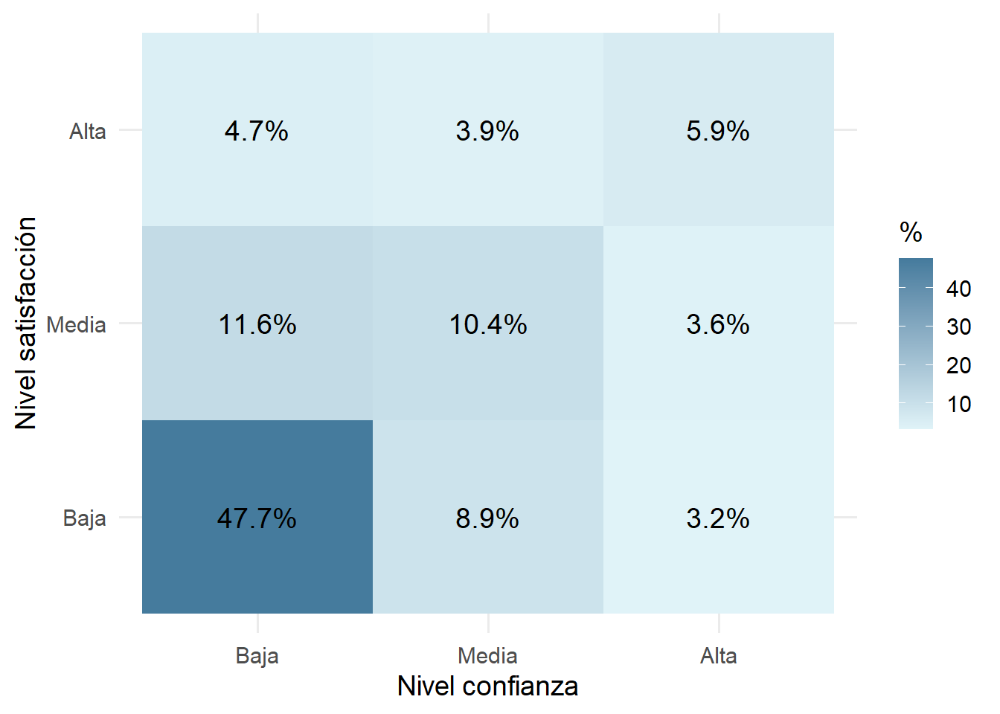
El gráfico muestra un patrón de que quienes presentan baja confianza en el Gobierno concentran los niveles más altos de baja satisfacción con la democracia (47.7%) y a medida que la confianza aumenta hacia niveles medios y altos, las proporciones de satisfacción media y alta se incrementan levemente, aunque siguen siendo minoritarias. La celda “baja confianza - baja satisfacción” domina la distribución, lo que evidencia una relación positiva y significativa entre ambas variables. En conclusión el gráfico refuerza la asociación identificada en el análisis estadístico.
Grafico H2.2: Correlación entre la Confianza al Poder judicial y la Satifacción a la Democracia.
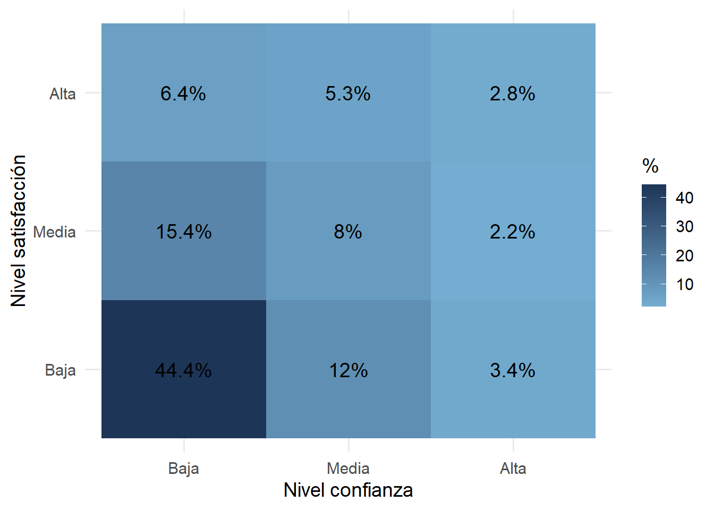
El gráfico muestra que las personas con baja confianza en el Poder Judicial concentran los niveles más altos de baja satisfacción con la democracia (44.4%). A medida que la confianza aumenta hacia niveles medios y altos, las proporciones de satisfacción también disminuyen considerablemente, lo cual evidencia un patrón claro de asociación positiva entre ambas variables. Aunque los porcentajes de satisfacción alta son bajos en todos los niveles, el gradiente del gráfico confirma que una menor confianza judicial se relaciona sistemáticamente con una menor satisfacción democrática.
Grafico H2.3: Correlación entre la Confianza al Congreso Nacional y la Satifacción a la Democracia.
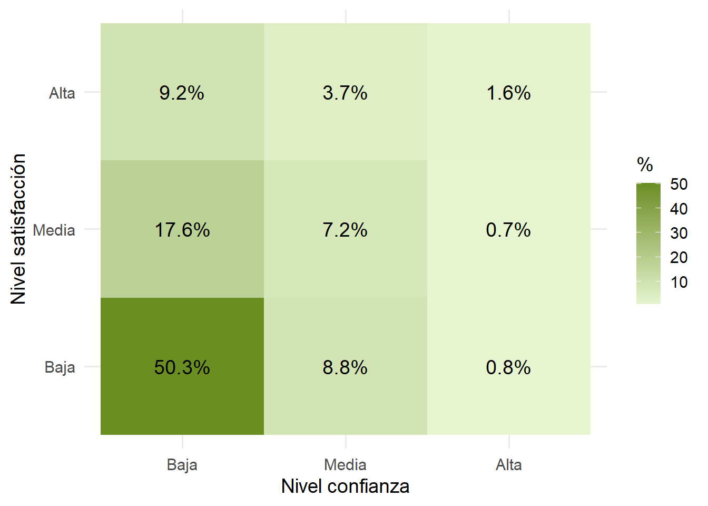
El gráfico muestra un claro patrón que es que las personas con baja confianza en el Congreso concentran los niveles más altos de baja satisfacción con la democracia. A medida que aumenta la confianza hacia niveles medios y altos, las proporciones de satisfacción media y alta se incrementan, aunque en menor medida. La celda “baja confianza - baja satisfacción” presenta la mayor frecuencia, lo que evidencia la relación significativa encontrada en los análisis. El gráfico permite visualizar de forma simple el gradiente positivo entre ambas variables.
En conclusión, los resultados evidencian un gradiente claro, es decir a mayor confianza institucional, mayor satisfacción con la democracia y con ellos la segunda hipótesis queda firmemente respaldada.
3.2.3 Análisis entre la correlación de las variables Confianza a los poderes del estado (conf_gob, conf_jub, conf_cong) y Edad
| Variable | Rho | p_valor |
|---|---|---|
| Edad-Gobierno | -0.035 | 0.0812 |
| Edad-Poder Judicial | -0.025 | 0.2152 |
| Edad-Congreso Nacional | -0.072 | 0.0003 |
La tercera hipótesis plantea que a menor edad, mayor será la confianza en los tres poderes del Estado. Para contrastar se estimaron correlaciones de Spearman entre la edad y los niveles originales de confianza en cada institución. Las correlaciones obtenidas son -0.035 para la confianza en el Gobierno, 0.025 para la confianza en el Poder Judicial y 0.072 para la confianza en el Congreso Nacional. Solo esta última alcanza significancia estadística, sin embargo en los tres casos los valores se mantienen por debajo del umbral de 0.10, lo que indica que la relación es extremadamente débil.
Gráfico H3.1: Confianza en el Gobierno por Grupo Etario.
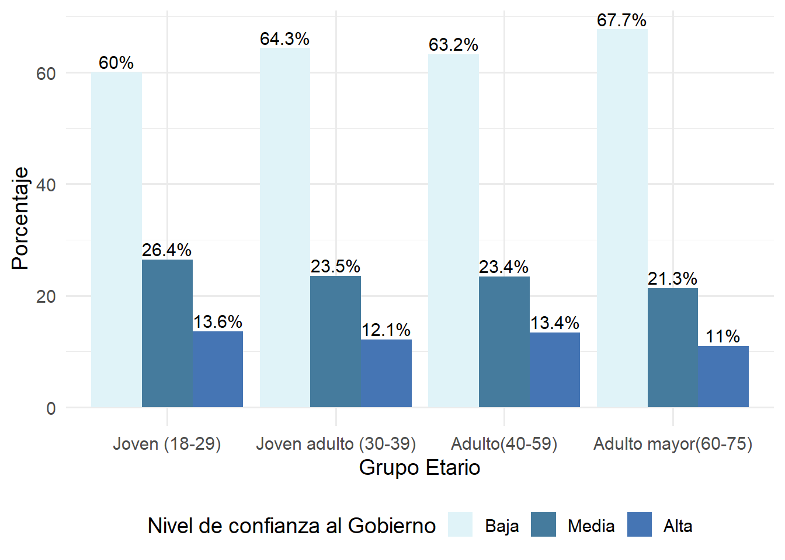
El gráfico muestra que la baja confianza en el Gobierno predomina en todos los grupos etarios, con porcentajes que van desde 60% hasta cerca de 68% y la confianza media y alta se distribuyen de manera similar entre tramos etarios, sin diferencias claras. Aunque los adultos mayores presentan ligeramente más baja confianza, las variaciones son pequeñas. La estructura general del gráfico es homogénea, lo que coincide con la correlación muy débil observada en la tabla.
Gráfico H3.2: Confianza en el Poder Judicial por Grupo Etario.
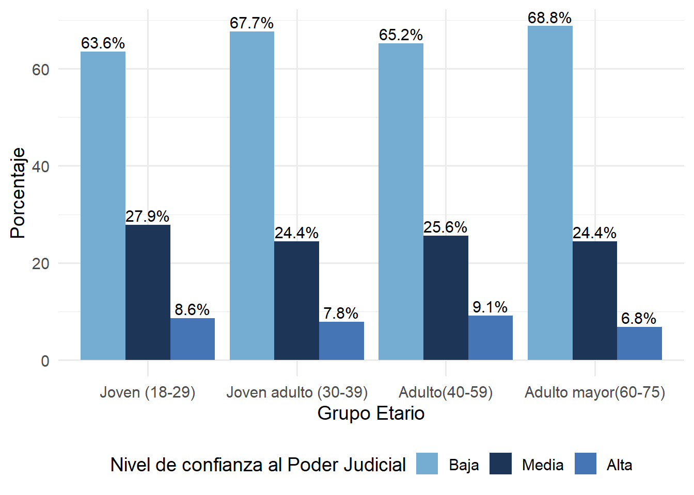
En todos los grupos etarios predomina la baja confianza en el Poder Judicial, con niveles de confianza alta que no superan el 9%. Las diferencias entre cohortes son mínimas, ya que los porcentajes se mantienen relativamente estables entre jóvenes, adultos y adultos mayores. Lo cual refuerza la conclusión de que la edad no determina los niveles de confianza judicial y coincide con la correlación cercana a cero observada en los resultados estadísticos.
Gráfico H3.3: Confianza en el Congreso Nacional por Grupo Etario.
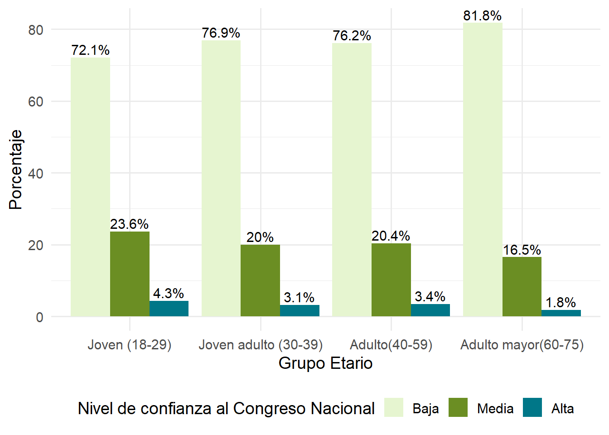
El gráfico evidencia un nivel de baja confianza muy alto en todos los grupos etarios, superando el 70% y llegando a más del 80% en adultos mayores. La confianza media y alta con minoritarias en todos los tramos. Aunque los niveles de desconfianza aumentan ligeramente con la edad, las diferencias no son suficientes para establecer un patrón claro. Estos resultados coinciden con la correlación muy débil encontrada, mostrando que la desconfianza es transversal a todas las edades. Por lo tanto la hipótesis tres se rechaza en términos prácticos, ya que la edad no parece explicar los niveles de confianza institucional.
4 Conlusión
A partir del presente estudio que tuvo como objetivo analizar la relación entre la percepción de la calidad de la democracia en Chile y las variables como la edad y confianza a los poderes del Estado, se puede concluir que en Chile a modo general existe una baja satisfacción y alta desconfianza en la democracia. A partir del análisis bivariado se puede concluir que, para la primera hipotesis según la correlación de Spearman la edad no define totalmente las diferencias en satisfacción democrática, demostrando que en todos los grupos etarios existe una baja satisfacción. Por otro lado, el resultado de Chi-Cuadrado de la segunda hipótesis muestra una asociación significativa entre la confianza en los tres poderes del Estado y la satisfacción con la democracia, principalmente en el caso del Gobierno. Finalmente, en la hipótesis que afirma que a menor edad mayor confianza en los tres poderes del estado, a través de la correlación de Spearman se puede afirmar que no existe una relación significativa.
Las principales limitaciones que presenta esta investigación corresponden, por un lado, a la recodificación de las variables a tres niveles, que inevitablemente significa la pérdida de información. Así mismo el uso del tratamiento “Listwise”, a pesar de que permite mantener un orden y coherencia para el análisis, se reduce el tamaño de la muestra y por lo tanto se pierde información. Mientras que por otro lado, a pesar de que el uso de la correlación de Spearman logra evidenciar si existe relación entre variables, no nos permite establecer causalidad. Para futuras investigaciones sería ideal poder analizar los datos de varias olas de la encuesta ELSOC, que permitirá identificar cambios o patrones en el tiempo, y así mismo se podría determinar de mejor manera la causalidad. Por otro lado, esto resultaría interesante para poder relacionar los datos con la coyuntura del país y en qué medida afectan, por ejemplo en el caso de estallido social o de la pandemia.
5 Bibliografia
Disi Pavlic, R., & Mardones Arévalo, R. (2019). Chile 2010: la desafección política y su impacto en la participación política convencional y no convencional. Revista Del CLAD Reforma Y Democracia, 73. https://doi.org/10.69733/clad.ryd.n73.a177
Sepúlveda-Rodríguez, I., & Garrido-Vergara, L. (2022). Satisfacción con la democracia y legitimidad en Chile. Revista De Sociología, 37(2), 1–15. https://doi.org/10.5354/0719-529X.2022.69099
Riffo Galán, F. (2019). ¿Qué influye en la confianza en las instituciones? Evidencia empírica para el caso Chileno [Seminario de Grado]. Universidad del Bío-Bío. http://repobib.ubiobio.cl/jspui/bitstream/123456789/3073/1/Riffo%20Gal%C3%A1n%2C%20Fabian.pdf
Levine, D. H., & Molina, J. E. (2007). La calidad de la democracia en América Latina: una visión comparada. América Latina Hoy, (46), 17–46. http://www.redalyc.org/articulo.oa?id=308004502
Patrón Sánchez, F., & León Ganaba, L. E. (2011). Calidad de la democracia y percepción ciudadana en América Latina. Revista Mañongo Nº 35, VOL. XVIII, , https://www.servicio.bc.uc.edu.ve/postgrado/manongo35/art10.pdf
Equipo ELSOC. (2023). Manual metodológico ELSOC 2016-2022. Centro de Estudios de Conflicto y Cohesión Social (COES). https://manual-metodologico-elsoc.netlify.app/manual-metodologico-elsoc.pdf